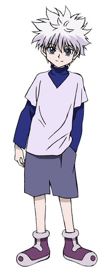

Killua Zoldyck
Killua Zoldyck (キルア゠ゾルディック, Kirua Zorudikku) is the third child of Silva and Kikyo Zoldyck and the heir of the Zoldyck Family, until he runs away from home and becomes a Rookie Hunter. He is the best friend of Gon Freecss and is currently traveling with Alluka Zoldyck.
Appearance
Killua has spiky silver hair, very pale skin, and blue eyes. His eyes change shape depending on the mood that he's in, narrowing and sharpening when he goes into assassination mode. Killua is fairly lean at the start of the series, due to constant physical conditioning and torture training he received when he was young. As time passes, he becomes more muscular and toned. In the Nippon Animation anime adaptation, Killua's eye color is changed to green during the OVAs. He is also often seen holding a green skateboard (turned yellow in the 2011 series). Killua typically wears baggy clothing, with his usual attire consisting of long-sleeved and dark-colored shirts. Most of his clothes have a turtleneck. Killua wears long, baggy shorts in the manga and Madhouse animated adaptation, but Nippon Animation's character design shortened them to reach above his knees. Killua also wears purple boots, recolored brown and black in the Nippon Animation adaptation. As a child, Killua's hair is longer, almost cascading to his shoulders. He wore a hoodie with his trademark blue coloring, grey pants, and shoes.